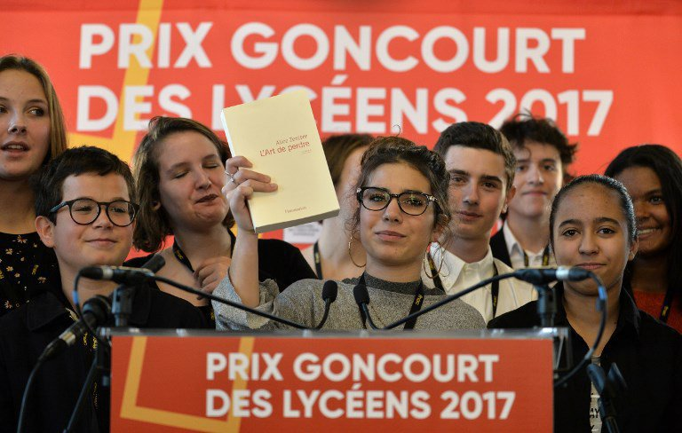
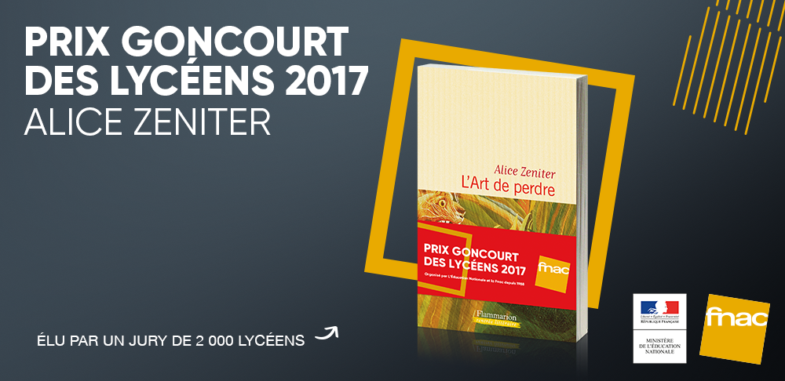
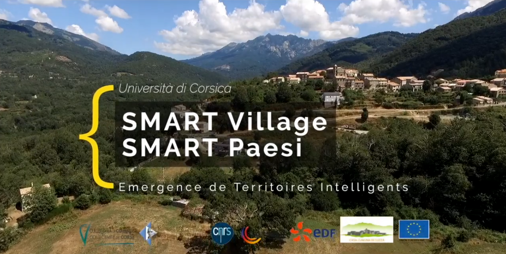
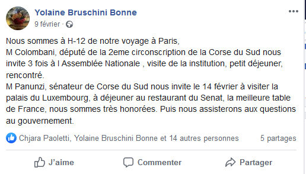
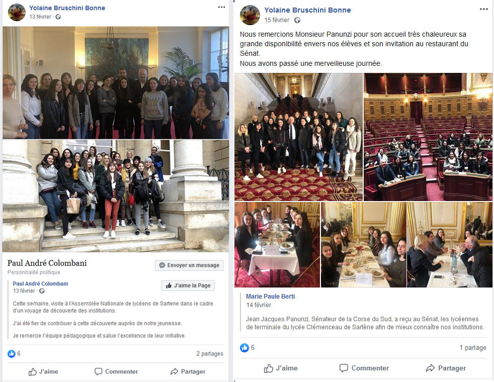
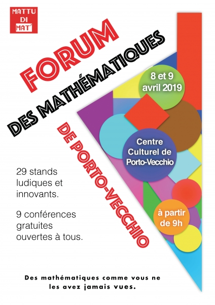

Le Lycée Georges Clemenceau dépend de l'Académie de Corse
Vacances scolaire
Pour le calendrier des vacances scolaires, le Lycée Georges Clemenceau est en zone B.
Divers
Internat
Restauration scolaire
Section européenne ou de langue orientale
Formation continue des adultes
Taux de réussite au baccalauréat
97,5 % des étudiants inscrits au Bac par le Lycée Georges Clemenceau ont obtenu leur diplôme en 2019
Sorties et Voyages scolaires 2017-2019
- Participation au Goncourt des Lycéens 2017 -

Créé et organisé par le ministère de l’Éducation nationale et la Fnac, avec l’accord de l’Académie Goncourt,
ce prix donne l’opportunité à près de 2 000 lycéens de se plonger dans une lecture passionnée et de faire entendre
leur voix pour élire leur lauréat, parmi les 15 auteurs sélectionnés. Il contribue à l’engagement du ministère de
l’Éducation nationale en faveur de la lecture et de l’éducation artistique et culturelle.
Cette édition anniversaire à été marquée par de nombreuses initiatives pédagogiques et artistiques au cours des
différents temps forts du prix.
Durant deux mois, les élèves de 56 lycées, de classes de seconde, première ou terminale, générales ou professionnelles,
ont lu l’ensemble des ouvrages de cette sélection 2017.
Ils ont eu l’opportunité d’échanger et de débattre avec les auteurs de la sélection lors des rencontres
organisées par la Fnac, du 9 au 18 octobre dans sept villes de France, au sein de plusieurs établissements
du réseau Canopé.
À l’issue de ces échanges, le lundi 13 novembre, ils ont choisit trois ouvrages lors de délibérations régionales,
puis le jeudi 16 novembre prochain, le lauréat du Prix Goncourt des Lycéens lors de la délibération nationale à Rennes.
Les quinze romans retenus étaient :

Kaouther Adimi – Nos richesses – Éd. Seuil
Patrick Deville – Taba Taba - Éd. Seuil
François-Henri Désérable – Un certain M. Piekielny - Éd. Gallimard
Brigitte Giraud – Un loup pour l’homme - Éd. Flammarion
Olivier Guez – La disparition de Josef Mengele - Éd. Grasset
Yannick Haenel – Tiens ferme ta couronne - Éd. Gallimard
Philippe Jaenada – La serpe - Éd. Julliard
Marie-Hélène Lafon – Nos vies - Éd. Buchet-Chastel
Véronique Olmi – Bakhita - Éd. Albin Michel
Alexis Ragougneau – Niels - Éd. Viviane Hamy
Yves Ravey – Trois jours chez ma tante - Éd. Minuit
Monica Sabolo – Summer - Éd. JC Lattès
Frédéric Verger – Les Rêveuses - Éd. Gallimard
Eric Vuillard – l’Ordre du jour - Éd. Actes Sud
Alice Zeniter – L’Art de perdre - Éd. Flammarion
Nous sommes alors allés à Marseille où nous avons pu découvrir la ville, visiter le MUCEM et rencontrer les auteurs des livres que nous avions
découverts pendant le mois précedent.
Ils ont répondus à nos nombreuses questions avant de dédicacer nos livres.
Nous avons accueilli quelques semaines plus tard dans notre lycée Didier Decoin, le secrétaire général de l'Academie Goncourt avec qui on
a pu converser et on à élu notre représentante qui alla nous représenta à Rennes et qui eu l'opportunité d'annoncer à la presse le grand gagnant du prix.
Merci à Mme Voisin et à Mme Lorenzi pour ce beau voyage et cette chance d'avoir pu participer à un tel évènement.
- Smart Paese -

Le concept de Smart Village s'appuie sur la notion de Smart City. En effet, ce concept de ville intelligente, lié au développement
de ville connectée et durable est de plus en plus visible en Europe et à travers le monde.
La question que l'on peut se poser : " Que faisons-nous des territoires non urbains ? "
Dans ce cadre, les chercheurs de l'Università di Corsica ont lancé une réflexion autour de cette question dans le contexte de la Corse.
Historiquement et socialement, le village en corse, "u paesi", a un poids important dans la vie des habitants de l'île. Construire un Smart
Village en Corse était donc une évidence.
Merci à Mme Lopez et aux personnes travaillant sur le projet à Cozzano
- Visite du sénat et de l'Assemblée nationnale -


Les délégués et élus du lycée ont eu l'opportunité de partir en voyage scolaire à Paris.
Les dix-sept lycéennes ont été invitées par leur deputé et leur sénateur à visiter le Sénat et l'assemblée Nationnale en plus du Musée du Louvre,
du Conseil Constitutionnel et de Matignon.
Le tout en cinq jours.
Merci à Mme Bonne et à Mme Lorenzi pour nous avoir offert cette opportunité
- Forum des Mathématiques -

L’apprentissage des mathématiques, qui a longtemps été considéré par les enfants (et les parents) comme une matière fastidieuse à apprendre, a évolué
ces dernières années. « Avant » ne disait-on pas d’un air fataliste : « il ou elle n’a pas la bosse des maths ! »Et ça s’arrêtait là. C’est donc par
des journées organisées pour des élèves du CM1 à la terminale, que les regards sur les mathématiques arrivent à changer. Elles donnent
aux enfants l’envie de comprendre et donc de maîtriser les maths, en réalisant que, concrètement, dans la vie courante, les mathématiques
sont à la base du progrès.
La classe de terminale avait eu une sortie au forum 2018 un an plus tôt et ont demandé avec l'aide de leur professeur de mathématiques
s'ils pouvaient y retourner en 2019, cette fois ci en présentant leurs propres stands.
C'est ainsi que la classe se partagea en trois et présenta trois thèmes différents:
La résolution du jeu Light Out grace au Pivot de Gauss
La résolution des Jeux de Nim grace à la suite de Fibonacci ou aux nombres binaires